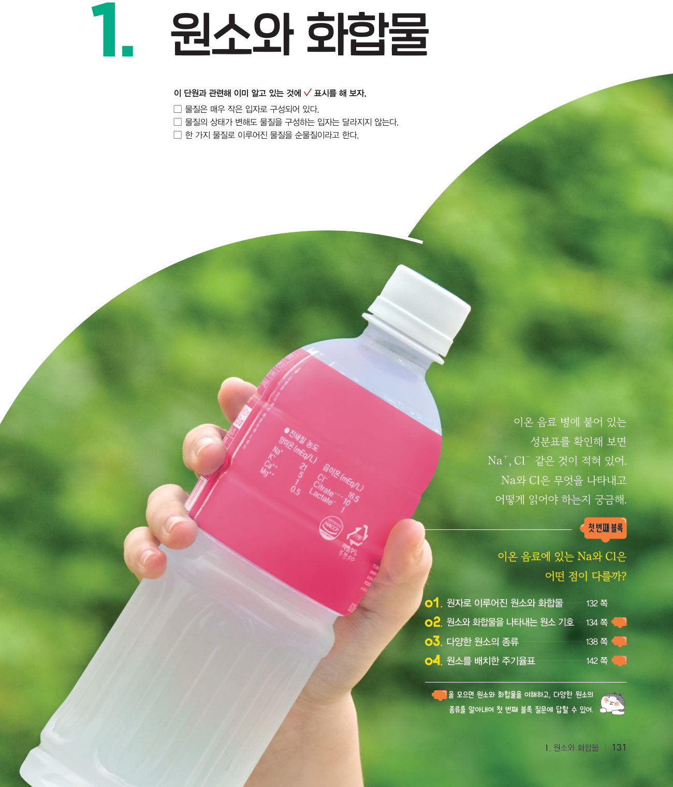
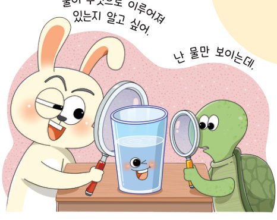
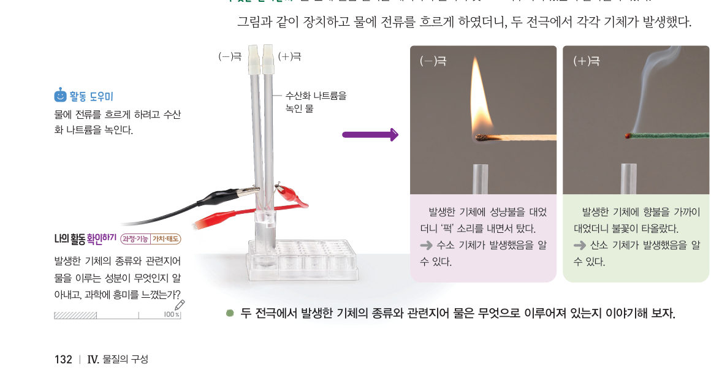
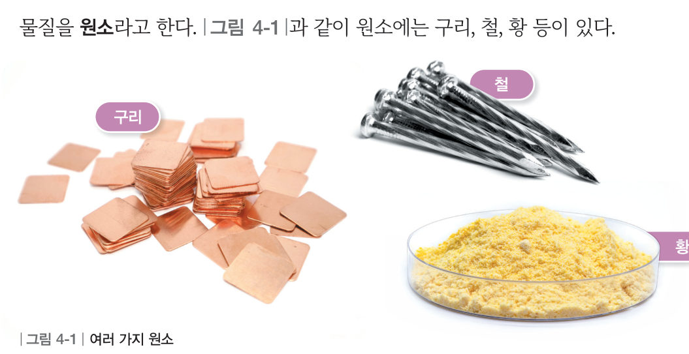
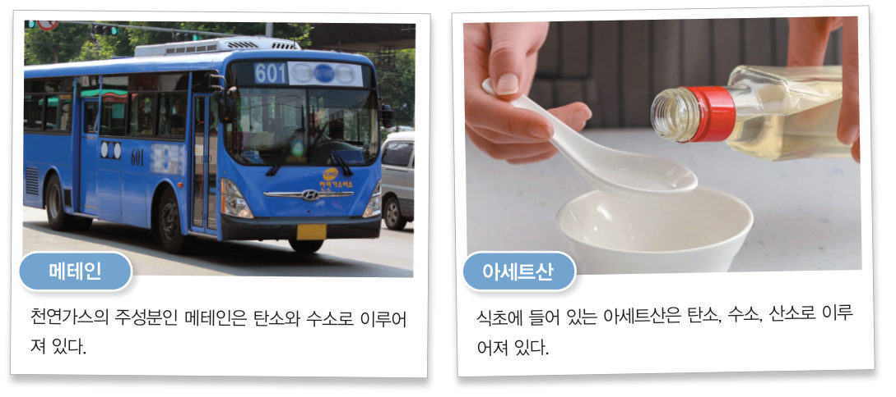

“물이 무엇으로 이루어져 있는지 알고 싶어.” “난 물만 보이는데.” 물은 무엇으로 이루어져 있을까? 가상 장치로 물을 분해해 기체를 확인하고, 입자 모형으로 원소와 화합물을 구별해 보자.
“이온 음료 병에 붙어 있는 성분표를 확인해 보면 Na⁺, Cl⁻ 같은 것이 적혀 있어.” “Na와 Cl은 무엇을 나타내고 어떻게 읽어야 하는지 궁금해.” 이 단원의 힌트 조각을 모으면 원소와 화합물을 이해하고, 다양한 원소의 종류를 알아내어 첫 번째 블록 질문에 답할 수 있다.
이 단원과 관련해 이미 알고 있는 것에 표시해 보자.
오래전 사람들은 물이 물질을 이루는 기본 성분이라고 생각했다. 과학이 발전하면서 물도 다른 성분으로 이루어져 있다는 사실이 밝혀졌다.

물질은 매우 작은 입자로 이루어져 있고, 물질을 이루는 기본 입자를 원자라고 한다. 물을 분해하면 수소와 산소로 나누어지는데, 이때 생성되는 수소와 산소는 더 이상 다른 종류의 물질로 분해되지 않는다. 수소와 산소처럼 한 종류의 원자로 이루어진 물질을 원소라고 한다. 원소에는 구리, 철, 황 등이 있다.
수소와 산소로 이루어진 물처럼 두 종류 이상의 입자가 모여 만들어진 물질을 화합물이라고 한다. 식초에 들어 있는 아세트산은 탄소, 수소, 산소로, 천연가스의 주성분인 메테인은 탄소와 수소로 이루어져 있다.


라부아지에가 뜨거운 철 관에 물을 통과시켜 물이 원소가 아니라는 것을 밝혀낸 과정을 찾아보자.
| ④ 원소는 한 종류의 원자로 이루어진 물질이다. | |
| ⑤ 화합물은 두 종류 이상의 입자가 단순히 섞여 있는 물질이다. | |
| ⑥ 화합물은 성분 물질의 성질이 그대로 나타난다. |
| 평가 기준 | 스스로 평가 |
|---|---|
| 지식·이해 원소와 화합물의 뜻을 알 수 있는가? | |
| 가치·태도 물을 이루는 성분을 알아내며 과학에 흥미를 느꼈는가? |